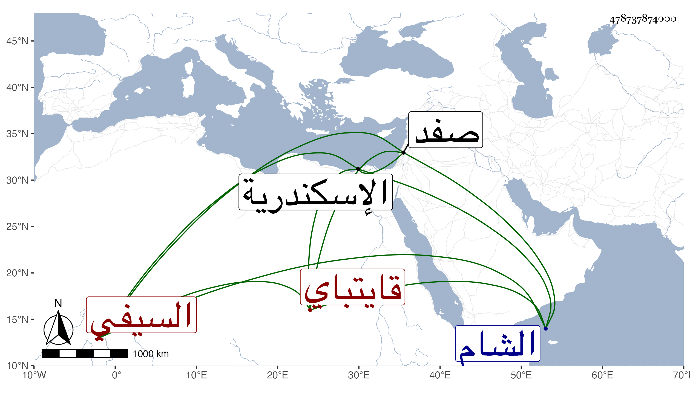

0902Sakhawi.DawLamic.ITO20230111-ara1.EIS1600.478737874000
Biography ID: 478737874000
843
أزبك جحا السيفي قايتباي . أصله من مماليك نوروز الحافظي ثم صار لقانباي المحمدي نائب الشام وصاحب المدرسة المجاورة للشيخونية ثم بعده خدم المؤيد شيخ وصار خاصكيا ثم في الأيام الأشرفية برسباي صار أمير عشرة ومن رؤس النوب وعينه الظاهر جقمق للسفر إلى البلاد الشامية بالأعلام سلطنة العزيز فلما تسلطن هو كان ممن عصى فقبض عليه وسجن بالإسكندرية ثم بصفد حتى مات بقلعتها في سنة سبع وأربعين وهو في الكهولة وكان ذا مروءة وكرم مع إسراف على نفسه وخفة روح ومجون ودعابة ولذلك لقب جحا .
